June 3rd, 2021¶
Motivation: Allen SDK, visualize structure tree and masks. Some more fMRI exploration at the end.
# HIDE CODE
import os
import ants
import nrrd
import sys
import collections
import numpy as np
import pandas as pd
import nibabel as nib
import networkx as nx
import operator as op
from os.path import join as pjoin
from tqdm.notebook import tqdm
import matplotlib.pyplot as plt
import seaborn as sns
sns.set_style('whitegrid')
# GitHub
git_path = pjoin(os.environ['HOME'], 'Dropbox/git/Ca-fMRI/')
sys.path.insert(0, git_path)
from utils.processing import *
# Allen
from allensdk.core.mouse_connectivity_cache import MouseConnectivityCache
from allensdk.api.queries.ontologies_api import OntologiesApi
from allensdk.core.structure_tree import StructureTree
# HIDE CODE
def trim_axs(axes, n):
axs = axes.flat
for ax in axs[n:]:
ax.remove()
return axs[:n]
def add_children(g: nx.DiGraph(), structure_tree: StructureTree, src_id: int, level: int):
src = structure_tree.get_structures_by_id([src_id])[0]
children = structure_tree.children([src_id])[0]
for child in children:
src_name = '\n'.join(src['name'].split(' '))
tgt_name = '\n'.join(child['name'].split(' '))
g.add_node(tgt_name, lvl=level)
g.add_edge(src_name, tgt_name)
return g, children
def make_tree_graph(root: str, n_levels: int = 3, structure_tree: StructureTree = None):
if structure_tree is None:
mcc = MouseConnectivityCache(resolution=100)
structure_tree = mcc.get_structure_tree()
structure = structure_tree.get_structures_by_name([root])[0]
g = nx.DiGraph()
g.add_node('\n'.join(structure['name'].split(' ')), lvl=0)
dend = {}
for lvl in range(n_levels):
if lvl == 0:
src_ids = [structure['id']]
else:
new_leaves = []
for i in src_ids:
g, children = add_children(g, structure_tree, i, lvl)
for child in children:
new_leaves.append(child['id'])
src_ids = new_leaves
dend[lvl] = src_ids
return g, dend
Allen Coordinate System¶
Here is an image embedded from their website:
ReferenceSpace id = 9 is in PIR orientation (+x = posterior, +y = inferior, +z = right). ReferenceSpace id = 10 is identical to ReferenceSpace id = 9. The reason for the two spaces is to allow left hemisphere sagittal data to correspond to the right hemisphere coronal reference atlas. This is implemented as a z-axis flip transform between the two reference spaces for the purposes of image synchronization (see below).
All coronal data is registered to ReferenceSpace id = 9. All sagittal data is registered to ReferenceSpace id = 10.

import allensdk
print(allensdk.__version__)
2.11.2
Make nx tree¶
from networkx.drawing.nx_agraph import write_dot, graphviz_layout
lvl2c = {
0: 'C7',
1: 'lightskyblue',
2: 'gold',
3: 'yellowgreen',
}
3 levels¶
n_levels = 3
root = 'Cerebrum'
g, dend = make_tree_graph(root, n_levels)
dend
{0: [567], 1: [688, 623], 2: [695, 703, 477, 803]}
fig, ax = plt.subplots(1, 1, figsize=(7, 6.6))
pos = graphviz_layout(g, prog='dot')#, root=root)
node2c = {i: lvl2c[n[1]['lvl']] for i, n in enumerate(g.nodes(data=True))}
nx.draw(
G=g,
pos=pos,
with_labels=True,
arrows=True,
arrowsize=30,
arrowstyle='->',
width=2,
node_size=6000,
font_size=15,
edge_color='k',
node_color=node2c.values(),
ax=ax,
)
fig.tight_layout()
# fig.savefig('cerebrum_2lvls.pdf', dpi=300, bbox_inches='tight')
plt.show()
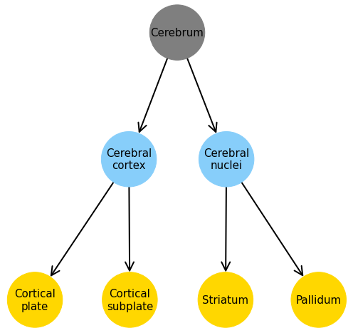
4 levels¶
n_levels = 4
root = 'Cerebrum'
g, dend = make_tree_graph(root, n_levels)
dend
{0: [567],
1: [688, 623],
2: [695, 703, 477, 803],
3: [315,
698,
1089,
16,
583,
942,
131,
295,
319,
780,
485,
493,
275,
278,
818,
835,
826,
809]}
fig, ax = plt.subplots(1, 1, figsize=(13.5, 10))
pos = graphviz_layout(g, prog='neato', root='Cerebrum')
node2c = {i: lvl2c[n[1]['lvl']] for i, n in enumerate(g.nodes(data=True))}
nx.draw(
G=g,
pos=pos,
with_labels=True,
arrows=True,
arrowsize=20,
arrowstyle='->',
width=1.5,
node_size=3500,
font_size=9,
edge_color='k',
node_color=node2c.values(),
ax=ax,
)
fig.tight_layout()
# fig.savefig('cerebrum_3lvls.pdf', dpi=300, bbox_inches='tight')
plt.show()

Load other data¶
mcc = MouseConnectivityCache(resolution=100)
structure_tree = mcc.get_structure_tree()
root = structure_tree.get_structures_by_name(['root'])[0]
cerebrum = structure_tree.get_structures_by_name(['Cerebrum'])[0]
isocortex = structure_tree.get_structures_by_name(['Isocortex'])[0]
all_experiments = mcc.get_experiments(dataframe=True)
selected_experiments = all_experiments.loc[all_experiments.structure_abbrev == 'SSp-bfd']
experiment_id = 657041814
# download the projection density volume for one of the experiments
pjd, pjd_info = mcc.get_projection_density(experiment_id)
# injection density: number of projecting pixels in injection site / voxel volume
ind, ind_info = mcc.get_injection_density(experiment_id)
# injection fraction: number of pixels in injection site / voxel volume
inf, inf_info = mcc.get_injection_fraction(experiment_id)
# binary mask indicating which voxels contain valid data
dm, dm_info = mcc.get_data_mask(experiment_id)
# template and annotation info
template, template_info = mcc.get_template_volume()
annot, annot_info = mcc.get_annotation_volume()
# in addition to the annotation volume, you can get binary masks for individual structures
root_mask, root_mask_info = mcc.get_structure_mask(root['id'])
cerebrum_mask, cerebrum_mask_info = mcc.get_structure_mask(cerebrum['id'])
cortex_mask, cortex_mask_info = mcc.get_structure_mask(isocortex['id'])
cerebrum_mask.sum() / root_mask.sum()
0.5453766530327945
# mesh = mcc.get_structure_mesh(cerebrum['id'])
# vertices, vertex_normals, face_vertices, face_normals = mesh
m0 = mcc.get_structure_mask(cerebrum['id'])[0]
names = collections.defaultdict(list)
for lvl, struct_ids in dend.items():
for struct_id in struct_ids:
name = structure_tree.get_structures_by_id([struct_id])[0]['name']
if name == 'Layer 6b, isocortex':
continue
names[lvl].append(name)
m1 = mcc.get_structure_mask(struct_id)[0]
msg = 'lvl {:d}. \t name = {:s}, \t\t structure_sz / cerebrum_sz = {:.1f} {:s}'
msg = msg.format(lvl, name, m1.sum() / m0.sum() * 100, '%')
print(msg)
print()
names = dict(names)
lvl 0. name = Cerebrum, structure_sz / cerebrum_sz = 100.0 %
lvl 1. name = Cerebral cortex, structure_sz / cerebrum_sz = 80.3 %
lvl 1. name = Cerebral nuclei, structure_sz / cerebrum_sz = 19.7 %
lvl 2. name = Cortical plate, structure_sz / cerebrum_sz = 77.1 %
lvl 2. name = Cortical subplate, structure_sz / cerebrum_sz = 3.2 %
lvl 2. name = Striatum, structure_sz / cerebrum_sz = 16.4 %
lvl 2. name = Pallidum, structure_sz / cerebrum_sz = 3.4 %
lvl 3. name = Isocortex, structure_sz / cerebrum_sz = 44.7 %
lvl 3. name = Olfactory areas, structure_sz / cerebrum_sz = 16.9 %
lvl 3. name = Hippocampal formation, structure_sz / cerebrum_sz = 15.5 %
lvl 3. name = Claustrum, structure_sz / cerebrum_sz = 0.2 %
lvl 3. name = Endopiriform nucleus, structure_sz / cerebrum_sz = 1.0 %
lvl 3. name = Lateral amygdalar nucleus, structure_sz / cerebrum_sz = 0.3 %
lvl 3. name = Basolateral amygdalar nucleus, structure_sz / cerebrum_sz = 0.7 %
lvl 3. name = Basomedial amygdalar nucleus, structure_sz / cerebrum_sz = 0.5 %
lvl 3. name = Posterior amygdalar nucleus, structure_sz / cerebrum_sz = 0.4 %
lvl 3. name = Striatum dorsal region, structure_sz / cerebrum_sz = 9.4 %
lvl 3. name = Striatum ventral region, structure_sz / cerebrum_sz = 3.2 %
lvl 3. name = Lateral septal complex, structure_sz / cerebrum_sz = 1.3 %
lvl 3. name = Striatum-like amygdalar nuclei, structure_sz / cerebrum_sz = 1.5 %
lvl 3. name = Pallidum, dorsal region, structure_sz / cerebrum_sz = 0.7 %
lvl 3. name = Pallidum, ventral region, structure_sz / cerebrum_sz = 1.2 %
lvl 3. name = Pallidum, medial region, structure_sz / cerebrum_sz = 0.5 %
lvl 3. name = Pallidum, caudal region, structure_sz / cerebrum_sz = 0.5 %
for lvl, name_list in names.items():
for name in name_list:
_structure = structure_tree.get_structures_by_name([name])[0]
_mask, _info = mcc.get_structure_mask(_structure['id'])
print('-' * 80)
for axis in range(3):
ants.from_numpy(template.astype(float)).plot(
axis=axis,
nslices=24,
overlay=ants.from_numpy(_mask),
overlay_cmap='hot',
overlay_alpha=0.6,
title='lvl {:d}. name = {:s}, axis = {:d}'.format(lvl, name, axis),
)
print('-' * 80)
print('\n\n')
--------------------------------------------------------------------------------
--------------------------------------------------------------------------------
--------------------------------------------------------------------------------
--------------------------------------------------------------------------------
--------------------------------------------------------------------------------
--------------------------------------------------------------------------------
--------------------------------------------------------------------------------
--------------------------------------------------------------------------------
--------------------------------------------------------------------------------
 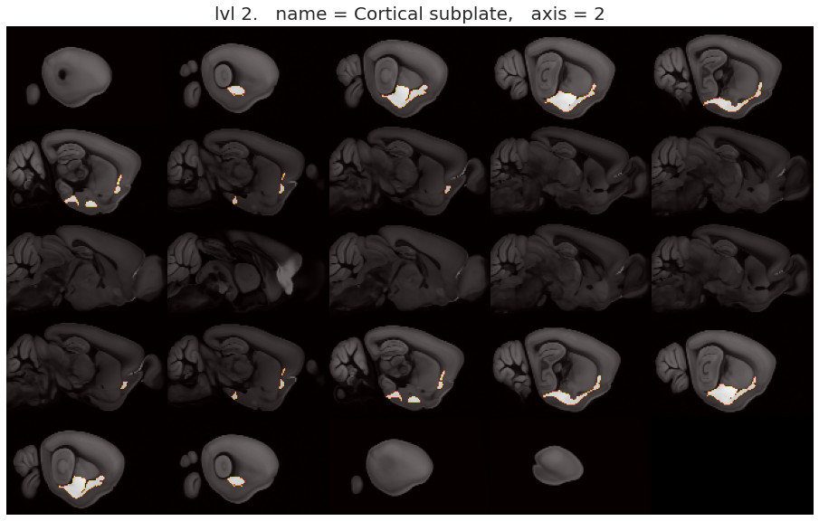
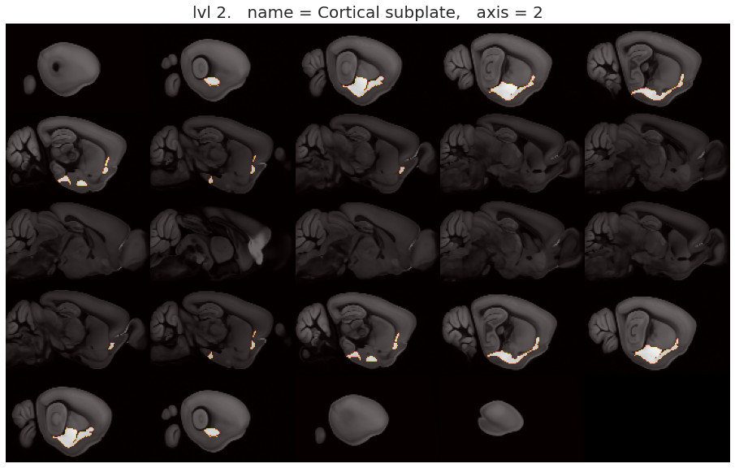
--------------------------------------------------------------------------------
--------------------------------------------------------------------------------
--------------------------------------------------------------------------------
--------------------------------------------------------------------------------

 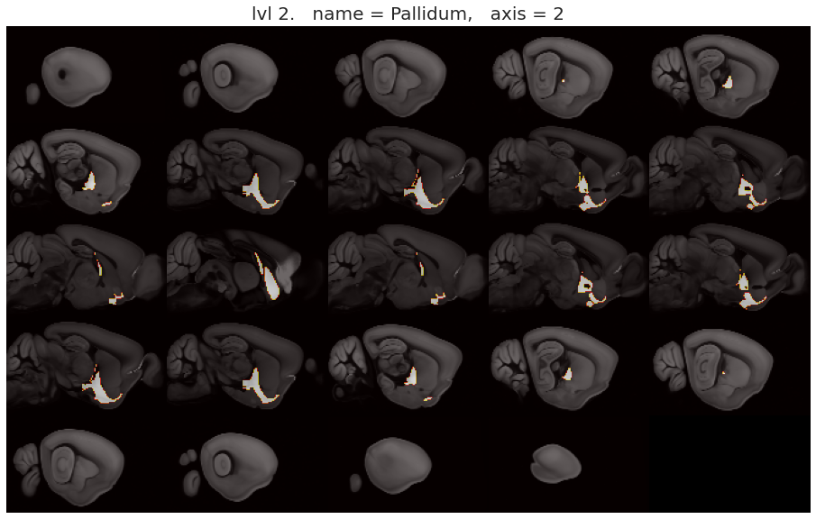
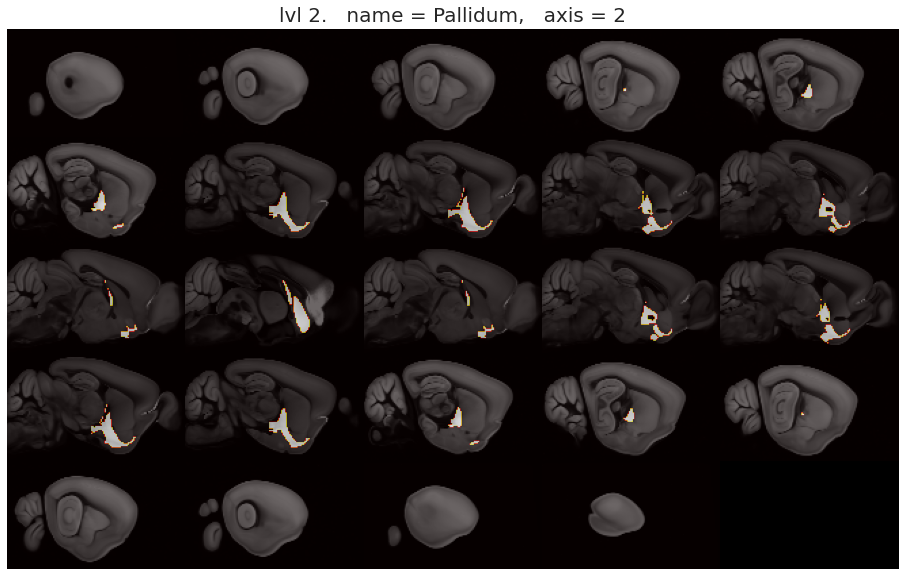
--------------------------------------------------------------------------------
--------------------------------------------------------------------------------
 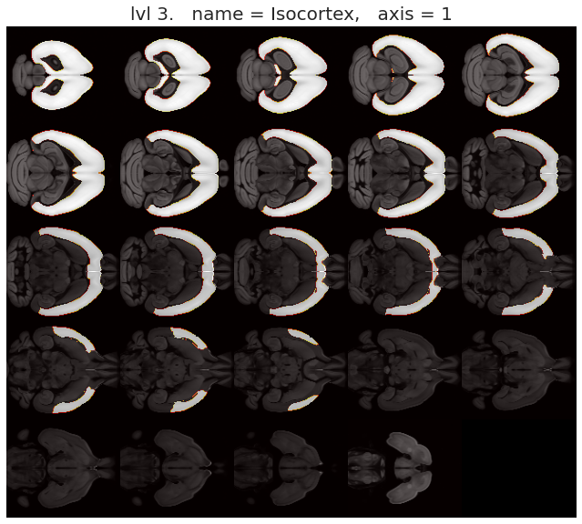
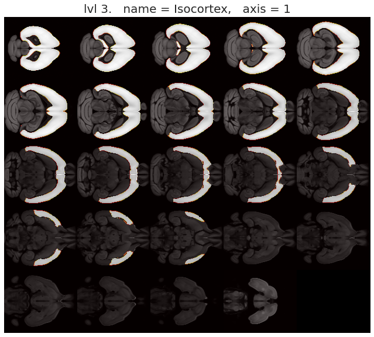

--------------------------------------------------------------------------------
--------------------------------------------------------------------------------
 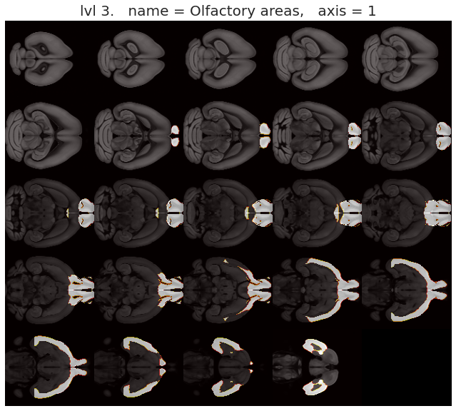
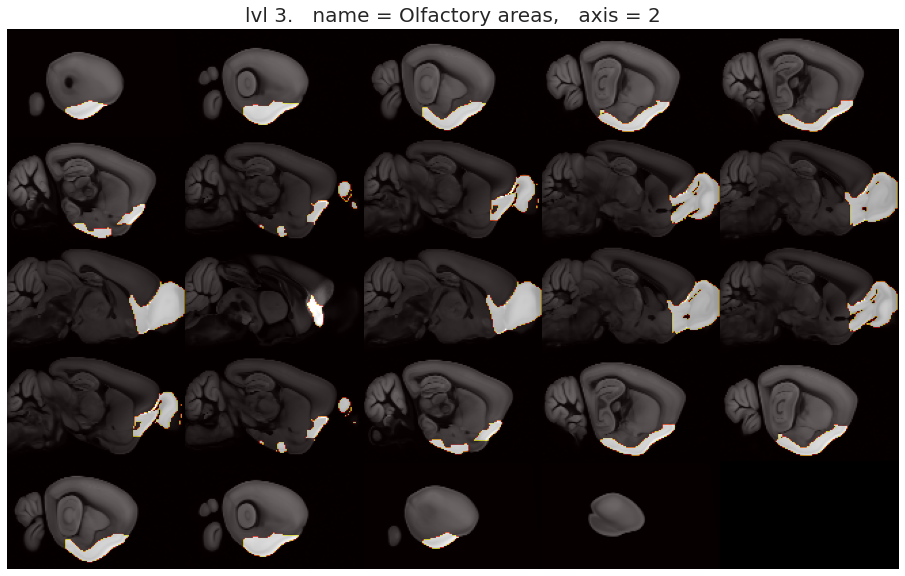
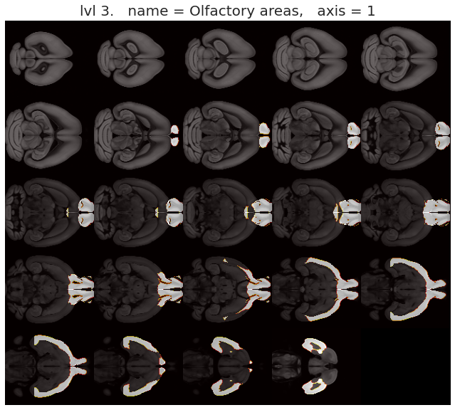
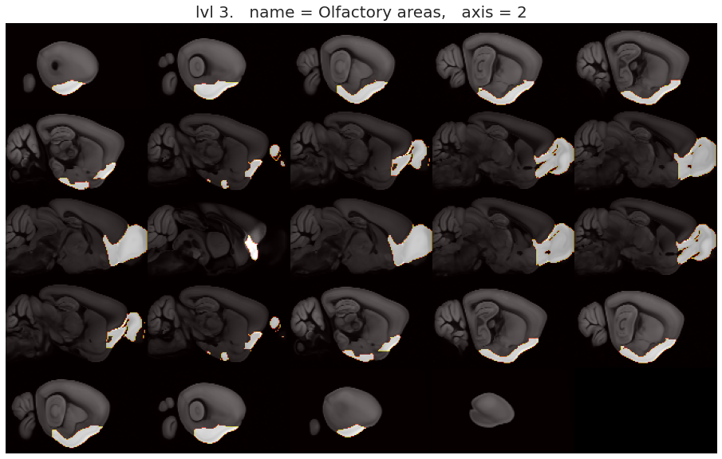
--------------------------------------------------------------------------------
--------------------------------------------------------------------------------


--------------------------------------------------------------------------------
--------------------------------------------------------------------------------
--------------------------------------------------------------------------------
--------------------------------------------------------------------------------
--------------------------------------------------------------------------------
--------------------------------------------------------------------------------
--------------------------------------------------------------------------------
--------------------------------------------------------------------------------
--------------------------------------------------------------------------------
--------------------------------------------------------------------------------
--------------------------------------------------------------------------------
--------------------------------------------------------------------------------


--------------------------------------------------------------------------------
--------------------------------------------------------------------------------
--------------------------------------------------------------------------------
--------------------------------------------------------------------------------
--------------------------------------------------------------------------------
--------------------------------------------------------------------------------
--------------------------------------------------------------------------------
--------------------------------------------------------------------------------
--------------------------------------------------------------------------------
--------------------------------------------------------------------------------
--------------------------------------------------------------------------------
--------------------------------------------------------------------------------
--------------------------------------------------------------------------------
--------------------------------------------------------------------------------
--------------------------------------------------------------------------------
--------------------------------------------------------------------------------
--------------------------------------------------------------------------------
all_experiments.loc[experiment_id]
gender F
injection_structures [329]
injection_volume 0.240514
injection_x 6870
injection_y 1420
injection_z 2270
product_id 36
specimen_name Emx1-IRES-Cre-363522
strain None
structure_abbrev SSp-bfd
structure_id 329
structure_name Primary somatosensory area, barrel field
transgenic_line Emx1-IRES-Cre
transgenic_line_id 177836119.0
id 657041814
primary_injection_structure 329
Name: 657041814, dtype: object
# get info on some structures
structures = structure_tree.get_structures_by_name(['Primary visual area', 'Hypothalamus'])
pd.DataFrame(structures)
| acronym | graph_id | graph_order | id | name | structure_id_path | structure_set_ids | rgb_triplet | |
|---|---|---|---|---|---|---|---|---|
| 0 | VISp | 1 | 185 | 385 | Primary visual area | [997, 8, 567, 688, 695, 315, 669, 385] | [396673091, 112905828, 688152357, 691663206, 6... | [8, 133, 140] |
| 1 | HY | 1 | 715 | 1097 | Hypothalamus | [997, 8, 343, 1129, 1097] | [2, 112905828, 691663206, 12, 184527634, 11290... | [230, 68, 56] |
oapi = OntologiesApi()
# get the ids of all the structure sets in the tree
structure_set_ids = structure_tree.get_structure_sets()
# query the API for information on those structure sets
pd.DataFrame(oapi.get_structure_sets(structure_set_ids))
| description | id | name | |
|---|---|---|---|
| 0 | List of structures in Isocortex layer 5 | 667481446 | Isocortex layer 5 |
| 1 | List of structures in Isocortex layer 6b | 667481450 | Isocortex layer 6b |
| 2 | Summary structures of the cerebellum | 688152368 | Cerebellum |
| 3 | List of structures for ABA Differential Search | 12 | ABA - Differential Search |
| 4 | List of valid structures for projection target... | 184527634 | Mouse Connectivity - Target Search |
| 5 | Structures whose surfaces are represented by a... | 691663206 | Mouse Brain - Has Surface Mesh |
| 6 | Summary structures of the midbrain | 688152365 | Midbrain |
| 7 | Summary structures of the medulla | 688152367 | Medulla |
| 8 | Summary structures of the striatum | 688152361 | Striatum |
| 9 | Structures representing subdivisions of the mo... | 687527945 | Mouse Connectivity - Summary |
| 10 | Summary structures of the hippocampal formation | 688152359 | Hippocampal Formation |
| 11 | List of visual cortex structures targeted for ... | 514166994 | Allen Brain Observatory targeted structure set |
| 12 | Summary structures of the olfactory areas | 688152358 | Olfactory Areas |
| 13 | Curated list of non-overlapping substructures ... | 167587189 | Brain – Summary Structures |
| 14 | List of structures in Isocortex layer 4 | 667481445 | Isocortex layer 4 |
| 15 | Structures representing the major divisions of... | 687527670 | Brain - Major Divisions |
| 16 | Summary structures of the pallidum | 688152362 | Pallidum |
| 17 | List of Primary injection structures for BDA/A... | 114512892 | Mouse Connectivity - BDA/AAV Primary Injection... |
| 18 | List of primary AND secondary injection struct... | 112905813 | Mouse Connectivity - BDA/AAV All Injection Str... |
| 19 | List of structures for ABA Fine Structure Search | 10 | ABA - Fine Structure Search |
| 20 | List of primary AND secondary injection struct... | 112905828 | Mouse Connectivity - Projection All Injection ... |
| 21 | List of structures in Isocortex layer 6a | 667481449 | Isocortex layer 6a |
| 22 | List of structures representing a areal level ... | 3 | Mouse - Areas |
| 23 | List of structures in Isocortex layer 1 | 667481440 | Isocortex layer 1 |
| 24 | Summary structures of the hypothalamus | 688152364 | Hypothalamus |
| 25 | List of structures in Isocortex layer 2/3 | 667481441 | Isocortex layer 2/3 |
| 26 | All mouse visual areas with layers | 396673091 | Mouse Cell Types - Structures |
| 27 | Summary structures of the cortical subplate | 688152360 | Cortical Subplate |
| 28 | Summary structures of the thalamus | 688152363 | Thalamus |
| 29 | List of structures representing a coarse level... | 2 | Mouse - Coarse |
| 30 | Summary structures of the isocortex | 688152357 | Isocortex |
| 31 | List of Primary injection structures for Proje... | 114512891 | Mouse Connectivity - Projection Primary Inject... |
| 32 | Summary structures of the pons | 688152366 | Pons |
# From the above table, "Mouse Connectivity - Summary" has id 167587189
summary_structures = structure_tree.get_structures_by_set_id([167587189])
pd.DataFrame(summary_structures)structure_set_ids
| acronym | graph_id | graph_order | id | name | structure_id_path | structure_set_ids | rgb_triplet | |
|---|---|---|---|---|---|---|---|---|
| 0 | FRP | 1 | 6 | 184 | Frontal pole, cerebral cortex | [997, 8, 567, 688, 695, 315, 184] | [3, 112905828, 688152357, 691663206, 687527945... | [38, 143, 69] |
| 1 | MOp | 1 | 18 | 985 | Primary motor area | [997, 8, 567, 688, 695, 315, 500, 985] | [112905828, 688152357, 691663206, 687527945, 1... | [31, 157, 90] |
| 2 | MOs | 1 | 24 | 993 | Secondary motor area | [997, 8, 567, 688, 695, 315, 500, 993] | [112905828, 688152357, 691663206, 687527945, 1... | [31, 157, 90] |
| 3 | SSp-n | 1 | 44 | 353 | Primary somatosensory area, nose | [997, 8, 567, 688, 695, 315, 453, 322, 353] | [112905828, 688152357, 691663206, 687527945, 1... | [24, 128, 100] |
| 4 | SSp-bfd | 1 | 51 | 329 | Primary somatosensory area, barrel field | [997, 8, 567, 688, 695, 315, 453, 322, 329] | [112905828, 688152357, 691663206, 687527945, 1... | [24, 128, 100] |
| ... | ... | ... | ... | ... | ... | ... | ... | ... |
| 311 | FN | 1 | 1097 | 989 | Fastigial nucleus | [997, 8, 512, 519, 989] | [112905828, 691663206, 687527945, 12, 68815236... | [255, 253, 188] |
| 312 | IP | 1 | 1098 | 91 | Interposed nucleus | [997, 8, 512, 519, 91] | [112905828, 691663206, 687527945, 12, 68815236... | [255, 253, 188] |
| 313 | DN | 1 | 1099 | 846 | Dentate nucleus | [997, 8, 512, 519, 846] | [112905828, 691663206, 687527945, 12, 68815236... | [255, 253, 188] |
| 314 | VeCB | 1 | 1100 | 589508455 | Vestibulocerebellar nucleus | [997, 8, 512, 519, 589508455] | [112905828, 691663206, 688152368, 184527634, 1... | [255, 253, 188] |
| 315 | fiber tracts | 1 | 1101 | 1009 | fiber tracts | [997, 1009] | [687527945, 184527634, 167587189, 691663206] | [204, 204, 204] |
316 rows × 8 columns
Summary plot¶
dims = {0: 'Coronal', 1: 'Axial', 2: 'Saggital'}
for dim, name in dims.items():
if dim == 0:
slice_idx = np.argmax(np.abs(pjd).mean(-1).mean(-1))
elif dim == 1:
slice_idx = np.argmax(np.abs(pjd).mean(-1).mean(0))
else:
slice_idx = np.argmax(np.abs(pjd).mean(0).mean(0))
nrows, ncols = 2, 3
fig, ccf_axes = plt.subplots(nrows, ncols, figsize=(12, 8))
for i in range(nrows):
for j in range(ncols):
interpolation = 'none'
vmin, vmax = None, None
if (i, j) == (0, 0):
data2plt = template.take(slice_idx, axis=dim)
cmap = 'Greys_r'
interpolation = 'antialiased'
title = 'registration template'
elif (i, j) == (0, 1):
data2plt = annot.take(slice_idx, axis=dim)
cmap = 'flag_r'
title = 'annotation volume'
vmin = 0
vmax = 2000
elif (i, j) == (0, 2):
data2plt = cortex_mask.take(slice_idx, axis=dim)
cmap = 'Greys_r'
title = 'isocortex mask'
elif (i, j) == (1, 0):
data2plt = pjd.take(slice_idx, axis=dim)
cmap = 'Greens'
interpolation = 'antialiased'
title = 'proj density (expt_id = {:d})'.format(experiment_id)
elif (i, j) == (1, 1):
data2plt = ind.take(slice_idx, axis=dim)
cmap = 'CMRmap'
title = 'inj density (expt_id = {:d})'.format(experiment_id)
else:
data2plt = cerebrum_mask.take(slice_idx, axis=dim)
cmap = 'Greys_r'
title = 'cerebrum mask'
# apply mask
data2plt = data2plt.astype(float)
data2plt *= dm.take(slice_idx, axis=dim)
ccf_axes[i, j].imshow(
X=data2plt,
cmap=cmap,
aspect='equal',
interpolation=interpolation,
vmin=vmin,
vmax=vmax,
)
ccf_axes[i, j].set_title(title, fontsize=13)
ccf_axes[i, j].axis('off')
fig.suptitle("{:s} (slice id: {:d})".format(name, slice_idx), fontsize=17)
fig.tight_layout()
plt.show()
print('\n')
Isocortex mask¶
isocortex
{'acronym': 'Isocortex',
'graph_id': 1,
'graph_order': 5,
'id': 315,
'name': 'Isocortex',
'structure_id_path': [997, 8, 567, 688, 695, 315],
'structure_set_ids': [2,
112905828,
691663206,
12,
184527634,
112905813,
687527670,
114512891,
114512892],
'rgb_triplet': [112, 255, 113]}
for dim in dims:
ants.from_numpy(cortex_mask).plot(axis=dim, nslices=24)
Cerebrum mask¶
cerebrum
{'acronym': 'CH',
'graph_id': 1,
'graph_order': 2,
'id': 567,
'name': 'Cerebrum',
'structure_id_path': [997, 8, 567],
'structure_set_ids': [112905828,
691663206,
12,
184527634,
112905813,
114512891,
114512892],
'rgb_triplet': [176, 240, 255]}
for dim in dims:
ants.from_numpy(cerebrum_mask).plot(axis=dim, nslices=24)
Spatial normalization using ANTs¶
config = Config()
# func = {}
for subject in tqdm(range(1, config.num_subjects+1), leave=False):
for session in tqdm(range(1, config.num_sessions+1), leave=False):
if subject != 6 or session != 1:
continue
keywords = [
'sub-SLC{:02d}'.format(subject),
'ses-{:d}'.format(session),
'space-individual',
]
# func
# for run in range(1, config.num_runs+1):
# kws_func = keywords + ['run-{:d}'.format(run), 'task-rest', 'bold']
# gen = (x for x in sorted(os.listdir(config.raw_dir)) if all(k in x for k in kws_func))
# try:
# func_file = pjoin(config.raw_dir, next(gen))
# except StopIteration:
# continue
# func[run] = ants.image_read(func_file, reorient='SAR')
# anat
kws_anat = keywords + ['T1w']
gen = (x for x in sorted(os.listdir(config.raw_dir)) if all(k in x for k in kws_anat))
anat_file = pjoin(config.raw_dir, next(gen))
# mask
kws_mask = keywords + ['desc-mask', 'bold']
gen = (x for x in sorted(os.listdir(config.raw_dir)) if all(k in x for k in kws_mask))
mask_file = pjoin(config.raw_dir, next(gen))
# load anat and mask and reorient
moving = ants.image_read(anat_file, reorient='SAR')
mask = ants.image_read(mask_file, reorient='SAR')
moving *= mask
mask = moving.get_mask()
# reference image
CH_mask = ants.from_numpy(cerebrum_mask.astype(float), origin=(0, 0, 0))
fixed = ants.from_numpy(template.astype(float), origin=(0, 0, 0))
fixed, CH_mask = [ants.resample_image(img, [2] * 3) for img in [fixed, CH_mask]]
moving, mask, fixed, CH_mask = list(
ants.from_numpy(img.numpy().astype(float), origin=(0, 0, 0))
for img in [moving, mask, fixed, CH_mask]
)
moving.shape, mask.shape, fixed.shape
((78, 64, 64), (78, 64, 64), (66, 40, 57))
Register¶
tx = ants.registration(
fixed=fixed,
moving=moving,
mask=mask,
type_of_transform='SyN',
verbose=True,
)
warped = ants.apply_transforms(
fixed=fixed,
moving=moving,
transformlist=tx['fwdtransforms'],
interpolator='linear',
)
warped
ANTsImage (RAI)
Pixel Type : float (float32)
Components : 1
Dimensions : (66, 40, 57)
Spacing : (1.0, 1.0, 1.0)
Origin : (0.0, 0.0, 0.0)
Direction : [1. 0. 0. 0. 1. 0. 0. 0. 1.]
for axis in range(3):
fixed.plot(
overlay=warped,
nslices=24,
overlay_alpha=0.4,
axis=axis,
figsize=1.5,
reorient=False,
title='After registration (axis = {:d})'.format(axis),
)
sns.set_style('white')
fig, axes = plt.subplots(3, 3, figsize=(6, 8))
for i in range(3):
for j in range(3):
if i == 0:
data2plt = fixed.numpy()
title = 'fixed'
elif i == 1:
data2plt = moving.numpy()
title = 'moving'
else:
data2plt = warped.numpy()
title = 'moving warped'
if i == 0:
if j == 0:
title += ' (coronal)'
elif j == 1:
title += ' (axial)'
else:
title += ' (saggital)'
axes[i, j].imshow(data2plt.mean(j))
axes[i, j].set_title(title)
axes[i, j].axis('off')
msg = '1st row: Average tgt (averaged across dimensions)\n'
msg += '2nd row: Anatomical data (sub-SLC{:02d}) transformed\n'
msg += '3rd row: Anatomical data (sub-SLC{:02d}) source'
plt.suptitle(msg.format(subject, subject), fontsize=15, y=1.03)
plt.tight_layout()
plt.show()

Viz Cerebrum mask on template + Warped¶
for axis in range(3):
fixed.plot(
overlay=CH_mask,
nslices=24,
overlay_alpha=0.4,
axis=axis,
figsize=1.5,
reorient=False,
title='Template + Cerebrum mask (axis = {:d})'.format(axis),
)


for axis in range(3):
warped.plot(
overlay=CH_mask,
nslices=24,
overlay_alpha=0.4,
axis=axis,
figsize=1.5,
reorient=False,
title='Warped + Cerebrum mask (axis = {:d})'.format(axis),
)
CH_mask_inv = ants.apply_transforms(
fixed=moving,
moving=CH_mask,
transformlist=tx['invtransforms'],
interpolator='genericLabel',
)
for axis in range(3):
moving.plot(
overlay=CH_mask_inv,
nslices=24,
overlay_alpha=0.4,
axis=axis,
figsize=1.5,
reorient=False,
title='Moving + Cerebrum mask inverted (axis = {:d})'.format(axis),
)
Apply transform on functional data¶
config = Config()
func = {}
for subject in tqdm(range(1, config.num_subjects+1), leave=False):
for session in tqdm(range(1, config.num_sessions+1), leave=False):
if subject != 6 or session != 1:
continue
keywords = [
'sub-SLC{:02d}'.format(subject),
'ses-{:d}'.format(session),
'space-individual',
]
# func
for run in range(1, config.num_runs+1):
kws_func = keywords + ['run-{:d}'.format(run), 'task-rest', 'bold']
gen = (x for x in sorted(os.listdir(config.raw_dir)) if all(k in x for k in kws_func))
try:
func_file = pjoin(config.raw_dir, next(gen))
except StopIteration:
continue
_bold = nib.load(func_file).get_fdata().squeeze()
# bold_reo = []
for t in range(_bold.shape[-1]):
slice_reo = ants.reorient_image2(_bold[..., t], orientation='SAR')
bold_reo = np.concatenate(bold_reo, axis=-1)
func[run] = ants.from_numpy(bold_reo.astype(float), origin=(0, 0, 0))
# anat
kws_anat = keywords + ['T1w']
gen = (x for x in sorted(os.listdir(config.raw_dir)) if all(k in x for k in kws_anat))
anat_file = pjoin(config.raw_dir, next(gen))
# mask
kws_mask = keywords + ['desc-mask', 'bold']
gen = (x for x in sorted(os.listdir(config.raw_dir)) if all(k in x for k in kws_mask))
mask_file = pjoin(config.raw_dir, next(gen))
# load anat and mask and reorient
moving = ants.image_read(anat_file, reorient='SAR')
mask = ants.image_read(mask_file, reorient='SAR')
moving *= mask
mask = moving.get_mask()
# reference image
CH_mask = ants.from_numpy(cerebrum_mask.astype(float), origin=(0, 0, 0))
fixed = ants.from_numpy(template.astype(float), origin=(0, 0, 0))
fixed, CH_mask = [ants.resample_image(img, [2] * 3) for img in [fixed, CH_mask]]
moving, mask, fixed, CH_mask = list(
ants.from_numpy(img.numpy().astype(float), origin=[0.0] * 3, spacing=[1.0] * 3)
for img in [moving, mask, fixed, CH_mask]
)
moving.shape, mask.shape, fixed.shape
---------------------------------------------------------------------------
AttributeError Traceback (most recent call last)
<ipython-input-28-33883c450835> in <module>
25 # bold_reo = []
26 for t in range(_bold.shape[-1]):
---> 27 slice_reo = ants.reorient_image2(_bold[..., t], orientation='SAR')
28 bold_reo = np.concatenate(bold_reo, axis=-1)
29 func[run] = ants.from_numpy(bold_reo.astype(float), origin=(0, 0, 0))
~/anaconda3/lib/python3.8/site-packages/ants/registration/reorient_image.py in reorient_image2(image, orientation)
65 >>> mni2 = mni.reorient_image2()
66 """
---> 67 if image.dimension != 3:
68 raise ValueError('image must have 3 dimensions')
69
AttributeError: 'numpy.ndarray' object has no attribute 'dimension'
x = ants.reorient_image2(ants.from_numpy(_bold[..., 54]), orientation='SAR')
x = ants.from_numpy(x.numpy().astype(float), origin=[0.0] * 3, spacing=[1.0] * 3)
# x.set_origin([0.0] * 3)
# x.set_spacing([1.0] * 3)
x
ANTsImage (RAI)
Pixel Type : float (float32)
Components : 1
Dimensions : (78, 64, 64)
Spacing : (1.0, 1.0, 1.0)
Origin : (0.0, 0.0, 0.0)
Direction : [1. 0. 0. 0. 1. 0. 0. 0. 1.]
x.plot(axis=2)
y = ants.apply_transforms(
fixed=fixed,
moving=x,
transformlist=tx['fwdtransforms'],
interpolator='linear',
)
y
ANTsImage (RAI)
Pixel Type : float (float32)
Components : 1
Dimensions : (66, 40, 57)
Spacing : (1.0, 1.0, 1.0)
Origin : (0.0, 0.0, 0.0)
Direction : [1. 0. 0. 0. 1. 0. 0. 0. 1.]
mask_inv
ANTsImage (RAI)
Pixel Type : float (float32)
Components : 1
Dimensions : (78, 64, 64)
Spacing : (1.0, 1.0, 1.0)
Origin : (0.0, 0.0, 0.0)
Direction : [1. 0. 0. 0. 1. 0. 0. 0. 1.]